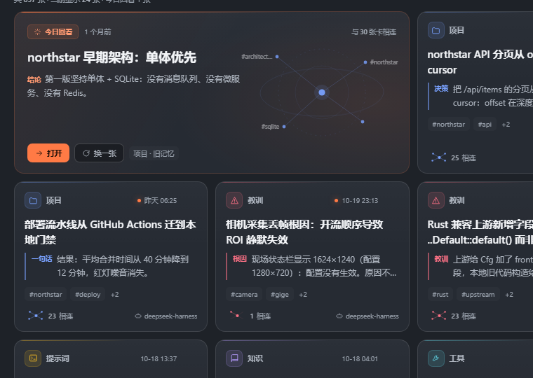
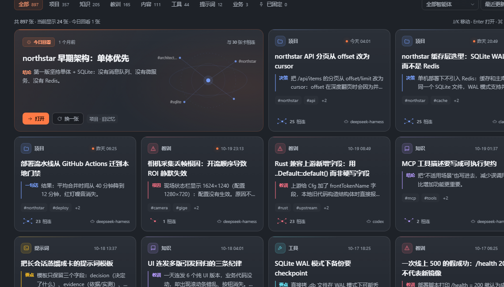
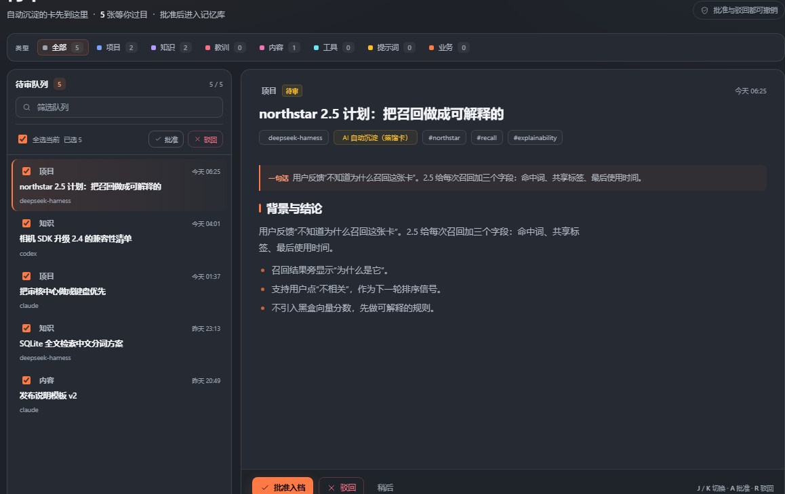
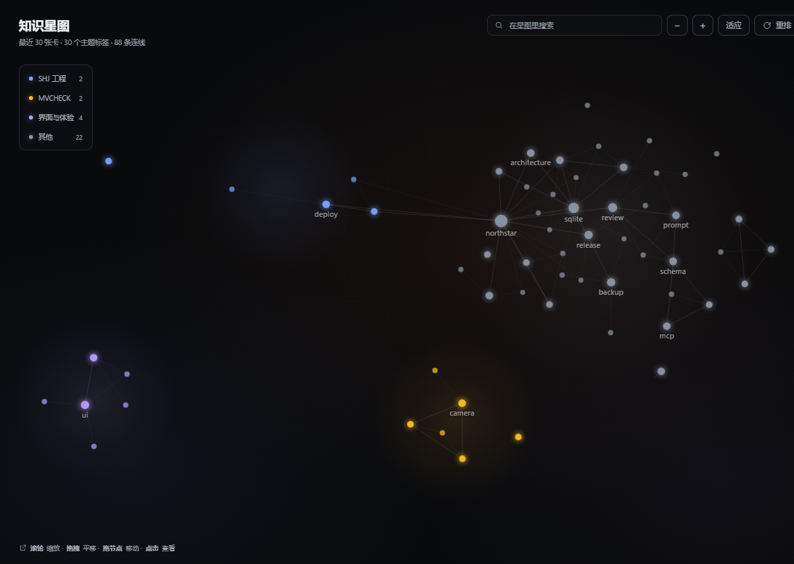
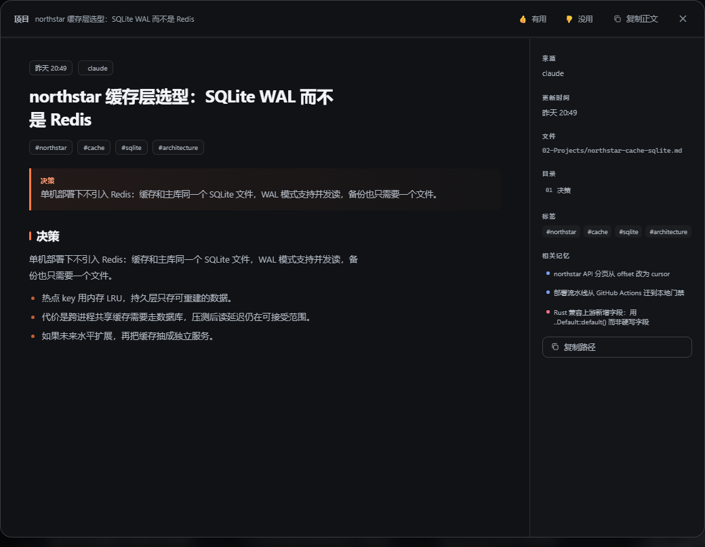

Your AI forgets.
Give it a second brain.
Every conversation becomes a Markdown card you can search, review and git diff. Recall only the relevant chunks: fewer tokens, less noise.

Not another vector store.
Memory you can open, review and roll back.
Similarity answers “does it look alike”. It does not answer “is it true”. memory-eternal turns memory into inspectable Markdown cards, then asks whether they should land.
Embeddings give you similarity.
Markdown gives you readability.
Review gives you control.
Not a rejection of vector search. A different trade-off: local, explainable, auditable. Make memory trustworthy first, then make it smart.
One conversation, four steps to memory.
No extra workflow. It happens when the session ends. You only make one decision in the review center: keep or drop.
Capture
Listen to session events, filter small talk and noise, keep the parts with signal.
Distill
Turn the signal into a card: decision, evidence, boundary. Written as local Markdown.
Review
New cards wait in quarantine. Approve to land, reject to recycle. Everything is reversible.
Recall
When the agent needs history, fetch only the relevant chunks. Do not paste the whole session.
Three screens you will use every day.
The library finds, the review center decides, the graph reveals relationships. All of them are real and interactive.




One vault, four agents.
DSH, Claude Code, Codex and Cursor write into the same local vault. `submittedBy` records the author; the review center manages them all.
Two commands. Start accumulating.
DSH users install from the marketplace. Other agents install the CLI and run `connect` once; MCP and hooks are wired for you.
# Desktop: Settings → Plugins → search memory-eternal dsh plugin --profile desktop add memory-eternal # Browser dsh plugin --profile web add memory-eternal # Verify, then restart the host node -e "console.log(require('memory-eternal/package.json').version)"
npm i -g memory-eternal dsh-memory connect claude # Claude Code dsh-memory connect codex # Codex / Codex Desktop dsh-memory connect cursor # Cursor # Or just run the web UI dsh-memory open
A few things you will ask.
Does memory leave my machine?
No by default. Markdown lives in a local vault, the index is SQLite, and the plugin has no external network dependency. If you configure a distillation model, only the session chunk being distilled is sent to that provider.
Does it conflict with Claude Code's memory?
No. It writes only its own MCP key and hooks. Four agents share one vault, each card records its author, and one review center manages them.
Why not use a vector database?
It is a trade-off, not a rejection. Tags, CJK snippets and structured fields already cover many “find the last decision” cases and stay explainable. Add semantic retrieval when it earns its place.
Will it burn tokens all day?
Distillation runs when a session ends; recall fetches a bounded set of relevant chunks. There is a cost-control profile for cooldowns, candidate limits and model rotation.
Can I export, back up and delete?
Yes. The vault is Markdown + SQLite, exportable as MD or JSON, git-manageable, backed up daily with 7-day retention. Deletes land in a recycle bin first.